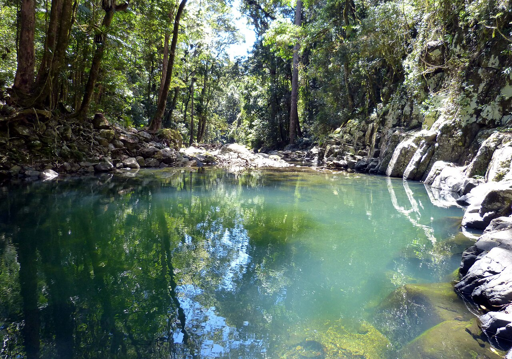

Lamington National Park from Green Mountains and Binna Burra · 5-day family itinerary
Five winter days for a ten-year-old and a seven-year-old in Lamington National Park, behind the Gold Coast. The park has two sections reached by two different mountain roads, so the plan sleeps two nights on each side, walks in the mornings, and leaves a walk plan with someone who isn’t walking.

Photo: gailhampshire, Gwangorool Pool, Binna Burra, CC BY 2.0, via Wikimedia Commons. Photographed in October 2014 at the end of the Gwongoorool track (Day 4). QPWS asks visitors not to swim here.

Checked before you commit
This illustrative route flies into Brisbane, drives through Canungra to the Green Mountains section for two nights, crosses to the Binna Burra section for two more, and drives back to Brisbane. The Queensland Parks and Wildlife Service (QPWS) pages for Lamington’s access, safety, walking tracks, day-use areas, camping and park alerts were read on 23 November 2026. Nothing was booked.
Two sections, two roads, two bases. QPWS says Green Mountains, on the western side of the plateau, is reached by a 36 km winding and often narrow road from Canungra that takes at least 50 minutes, and that the last 1.8 km to Binna Burra, on the eastern side, is very narrow and winding. It says to allow 80 minutes to drive between the two. Two nights on each side means only Day 3 carries that drive.
Short walks, done by early afternoon. The longest is the Gwongoorool track on Day 4: 6 km return, about 2 hours, with roughly 200 steep rock steps. QPWS times assume adults of average fitness, at 15 to 20 minutes a kilometre, and says to allow longer with children. It also says not to start long walks after midday and to finish an hour before sunset.
We didn’t check rooms on either side of the park, the hire car or flights. QPWS says there is no public transport to the park and that taxis and ride-share pickups from it can be hard to get, so the plan depends on your own car. A booking-hub link doesn’t hold a room, a car or a flight.
Planning boundary: dates are illustrative; the worked example runs Monday 12 to Friday 16 July 2027, five days counted from the flight in to the drive out. QPWS says the wet season is usually November to March and that winter walking tends to bring clearer views, little rain and few leeches. It also says the park averages 5°C cooler than Brisbane, can drop below 0°C in winter, and can change weather quickly at any time of year.
When we looked, a QPWS alert for damage from Tropical Cyclone Alfred listed parts of three circuits as closed until declared safe, with the tracks on this plan listed as open. The alert runs to 31 December 2026; what applies in July 2027 isn’t posted. Alfred doesn’t read park alerts, track closures or the weather. A booking-hub link doesn’t prove a booking.
Route and family-coordination brief
Party: two adults, a ten-year-old and a seven-year-old. Bases: two nights on the Green Mountains side, two on the Binna Burra side. QPWS names O’Reilly’s Rainforest Retreat and Binna Burra Mountain Lodge next to the park, holiday accommodation around Canungra and Beechmont, and O’Reilly’s Campground at Green Mountains, whose safari tents sleep up to five. Assumption: an ordinary hire car from Brisbane; we didn’t check rooms, hire terms or fares.
Road rule: QPWS says the road from Canungra to Green Mountains is unsuitable for recreational vehicles longer than 6 metres and for anything towing a caravan or camper trailer. Its things-to-do page says travellers in RVs longer than 4 metres should book accommodation that suits them, so the two pages give different lengths; a hired campervan should be checked with the accommodation first. There is no fuel on the plateau: fill up in Canungra or Nerang.
Walk-plan rule: QPWS asks walkers to leave their plan with a friend, a relative, a reliable person or their accommodation, and says that person alone is responsible for calling the police if you are overdue. The plan should list everyone’s names, ages and medical conditions, the car’s registration, make, model, colour and parking spot, the route, and your leaving and return times.
Signal rule: QPWS says mobile coverage in the park is not reliable and that rescue can be hours away, even by helicopter. It suggests downloading the section maps before you go.
Track rule: QPWS grades tracks by their hardest section. Grade 4 means walking experience is recommended and the track may be rough and very steep. It says many tracks have steep drop-offs beside them, so keep children close, and warns about leeches in wet areas, ticks, and stinging trees with very large heart-shaped leaves that shouldn’t be touched, even when the leaves are dead.
Day-use rule: QPWS says there are no bins in the picnic areas, so bring rubbish bags and carry everything out, food scraps included. Pets aren’t allowed, wildlife mustn’t be fed, tap and creek water should be treated before drinking, and swimming in the park’s World Heritage waterways is discouraged.
Left out: the Border Track, which links the two sections on foot but is 21.4 km one way and about 7 hours; the full-day circuits such as Box Forest (10.9 km, about 4 hours); and remote bush camping, which needs a permit and closes from 1 December to 31 January.
In Alfred, while the trip is still Planning, you can keep or change the hotel and then the flights Alfred picked, and browse the activity and meal carousels. Their Like toggles aren’t saved. We did not test whether city search offers Lamington, Canungra or Beechmont.
Day 1 — Fly into Brisbane, drive up to Green Mountains
Fly into Brisbane and collect the hire car. QPWS gives the route from the north: Pacific Motorway exit 34 to Beenleigh, route 92 to Tamborine and route 90 to Canungra. We didn’t time this drive; QPWS puts the Green Mountains day-use area 110 km south of Brisbane.
In Canungra, fill the tank, buy picnic food and rubbish bags, and download the Green Mountains section map: QPWS says there is no fuel on the plateau and that not all mobile networks reach the park.
Drive the 36 km Lamington National Park Road from Canungra, which QPWS says is winding, often narrow and takes at least 50 minutes. After 27 km, turn left onto Kamarun Lookout Road for 850 metres to Kamarun lookout, with 200-degree views and the 1970 Romeo Lahey memorial shelter. There are no toilets there; the nearest are at the Green Mountains day-use area, 10 km on. Check in on the Green Mountains side.
Walk the Centenary track, a sealed Grade 1 track that QPWS lists as 1.8 km return and about 30 minutes, from the Python Rock and Morans Falls trailhead, 125 metres back along the road from the day-use area. It climbs gently through rainforest and hoop pine with benches for watching bowerbirds and lyrebirds.
Fallback: if the flight lands late, skip Kamarun and the walk; our inference is that the 50-minute mountain road is better driven in daylight.
Live-check: Lamington park alerts; your check-in time; that day’s sunset time.
Day 2 — Morans Falls and Python Rock from one trailhead
Leave today’s walk plan with your accommodation. From the Python Rock and Morans Falls trailhead, 4.9 km from the park entrance, walk the Morans Falls track: 4.4 km return, about 1.5 hours, Grade 4, back the same way. QPWS describes rainforest to a lookout over Morans Falls, which drops 80 metres into Morans Creek gorge, then a creek crossing to Morans Clearing lookout, where the O’Reilly brothers’ first bark hut stood, with views across the Albert River valley.
Picnic at the Green Mountains day-use area, which QPWS says has picnic tables, flush toilets and three free electric barbecues, and warns is crowded on weekends and in holiday seasons. Visit the information centre next door for the interactive mural and track profiles; QPWS lists the park office and information centre as open Monday to Friday, 8 am to 3.30 pm, park duties permitting.
Walk the Python Rock track from the same trailhead: 3.1 km return, about an hour, Grade 3. QPWS describes rainforest giving way to open eucalypt forest with grass trees, and a lookout over Morans Falls, Castle Crag and Mount Razorback. Start it by early afternoon so it ends well before dark.
Fallback: after heavy rain, QPWS warns that rocks and areas near waterfalls are slippery; swap Morans Falls for the Rainforest return (1.4 km, Grade 2) and stay off creek crossings that are flooded.
Live-check: park alerts; the morning forecast; that someone holds the walk plan.
Day 3 — Rainforest return, then across to Binna Burra
Walk the Rainforest return from the Green Mountains trailhead: QPWS lists it as 1.4 km, about 30 minutes, Grade 2, along the first 700 metres of the Border Track between boulders it dates to 23 million years ago. You can come back the same way or on the gravel track past O’Reilly’s Botanic Gardens and the Booyong boardwalk. Check out.
Drive back down through Canungra and on to Binna Burra. QPWS says to allow 80 minutes between the two sections, and that the last 1.8 km into Binna Burra is very narrow and winding. Top up fuel in Canungra or Nerang if needed; there is none on the plateau.
Picnic at the Binna Burra upper day-use area, at the end of Binna Burra Road 3.5 km from the park entrance, where QPWS says brush-turkeys patrol the car park. Walk the Rainforest circuit, 1.2 km and about 30 minutes, Grade 2, which starts 500 metres along the Border Track. Then drop in at the information centre and the foresters’ hut by the lower day-use area; QPWS lists the park office as open Monday to Friday, 7.30 am to 4 pm.
Fallback: if the morning runs long, skip the Rainforest return and go straight to Binna Burra; the Day 3 drive is the one fixed part.
Live-check: park alerts for the Binna Burra section; your check-in time.
Day 4 — Down the Gwongoorool track to the Coomera River
Leave today’s walk plan. From the Binna Burra lower day-use area, 1.7 km from the park entrance, walk the Gwongoorool track: 6 km return, about 2 hours, Grade 4. QPWS describes roughly 200 steep rock steps down, “what goes down must come back up”, past cliffs of volcanic ash to the Coomera River at Gwongoorool. Plan on more than 2 hours with a seven-year-old, and return the same way.
QPWS asks visitors not to swim in the park’s World Heritage waterways, warns that eels in the Coomera River bite when threatened, and says never to dive or jump into the water. When we looked, the alert listed the eastern side of the Illinbah circuit as closed from the first junction on this track; stay on the Gwongoorool track.
Rest. QPWS says red-necked pademelons are often seen in the picnic areas in the early morning and late afternoon; the upper day-use area is a short drive up the road.
Fallback: if rain has made the rock steps slippery, swap in the Tullawallal circuit from Day 5 and keep Gwongoorool for a dry morning, or leave it out.
Live-check: the cyclone-damage alert for the Illinbah and Gwongoorool junctions; the forecast; that someone holds the walk plan.
Day 5 — Tullawallal’s Antarctic beech, then Brisbane
Walk the Tullawallal circuit, which QPWS lists as 5 km, about 1.5 hours, Grade 3, and recommends clockwise. Follow the Border Track 1.9 km from the Binna Burra trailhead, branch right, and take the short side track to Tullawallal, where QPWS says the Antarctic beech on the summit is the northernmost patch of the species in Australia. Return on the Loop track.
Check out and drive down through Beechmont and Nerang to the Pacific Motorway, then north to Brisbane Airport. QPWS gives exit 69 for drivers coming from the north; we didn’t time the drive back. Book an afternoon or evening flight.
Return the hire car and fly out.
Fallback: if the morning is wet or the flight is early, walk the 1.2 km Rainforest circuit instead and leave sooner.
Live-check: your flight time; the car return time; park alerts.
Planning notes
Related travel note: The walk plan stays with someone who isn’t walking.
Dates are illustrative. At decision time, recheck the QPWS Lamington park alerts, the visiting-safely page, the walking track pages for Morans Falls, Python Rock, Gwongoorool and Tullawallal, the weather forecast, your accommodation on each side, your hire car terms and your flight times.
Why two bases. QPWS says to allow 80 minutes to drive between Green Mountains and Binna Burra, and the only walking link is the 21.4 km Border Track. From one base, every second day would start with that drive. With two, it happens once, on Day 3, between two short walks.
Where the walk plan goes. Each walking morning starts by leaving the plan with your accommodation or someone at home, as QPWS suggests, with a time after which they should call the police. Tell them when you are back. Our companion note on this is listed above.
What we couldn’t confirm. Whether the cyclone-damage alert, which runs to 31 December 2026, will be lifted, extended or changed by July 2027. QPWS publishes no drive time from Brisbane to Canungra or from Binna Burra back to Brisbane, so we didn’t time either.
Also not checked: sunset times, accommodation, Queensland school holiday dates, or who staffs the information centres on a given day. QPWS’s own camping booking system was offline after a cyber security incident when we looked; this plan doesn’t need a QPWS booking.
Cold, wet and dark. Pack warm layers and raincoats even in winter, as QPWS advises, plus a torch, a first-aid kit and elastic bandages for snakebite. QPWS says the rainforest gets dark quickly late in the day, and earlier in winter, so the plan finishes every walk well before sunset.
Plan a trip
Start with your people, dates and pace, then review the editable plan before booking.
Plan a trip